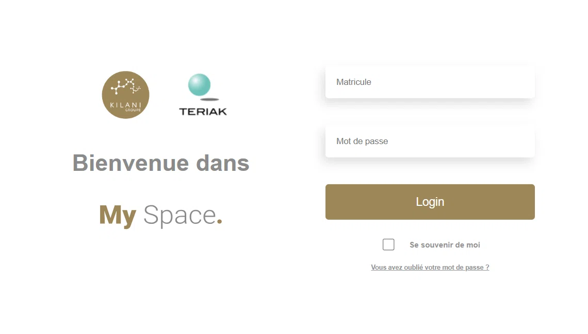
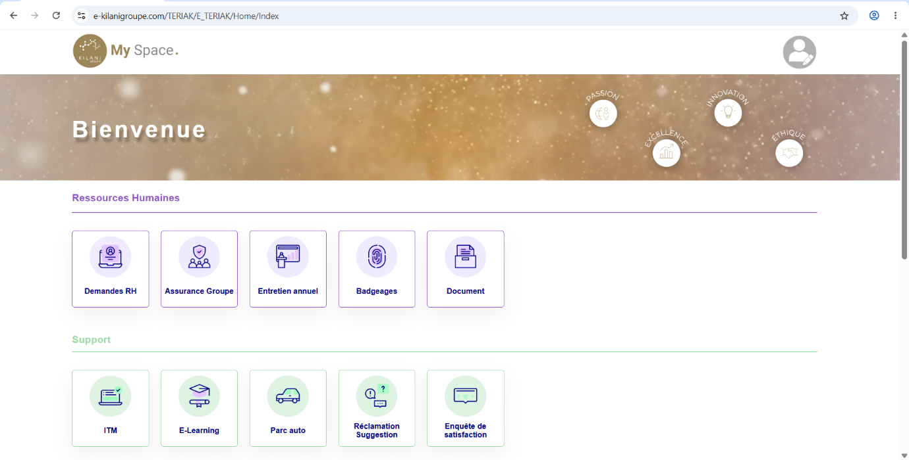

Rappel de la procédure
Afin d'améliorer le suivi, la réactivité et la qualité de notre support informatique, nous vous rappelons que :
À compter du mercredi 09/09/2026 toute demande d'assistance informatique devra obligatoirement faire l'objet d'un ticket dans ITM.
Pourquoi utiliser ITM ?
- Traçabilité : chaque demande et chaque intervention sont enregistrées et suivies.
- Priorisation : les tickets permettent d'identifier les demandes urgentes.
- Suivi des interventions : l'historique conserve une vision claire des actions réalisées.
- Gestion des ressources : évaluation de la charge de travail et adaptation des ressources.
Comment faire ? Créez un ticket directement dans ITM. Une procédure détaillée vous est proposée ci-dessous.
Accéder à My Space
Connectez-vous à votre portail interne My Space avec votre Login (Matricule) et votre mot de passe.
e-kilanigroupe.com/TERIAK/E_TERIAK/
Ouvrir ITM depuis le tableau de bord
Dans My Space, rendez-vous dans la rubrique Support, puis cliquez sur le bouton ITM.
